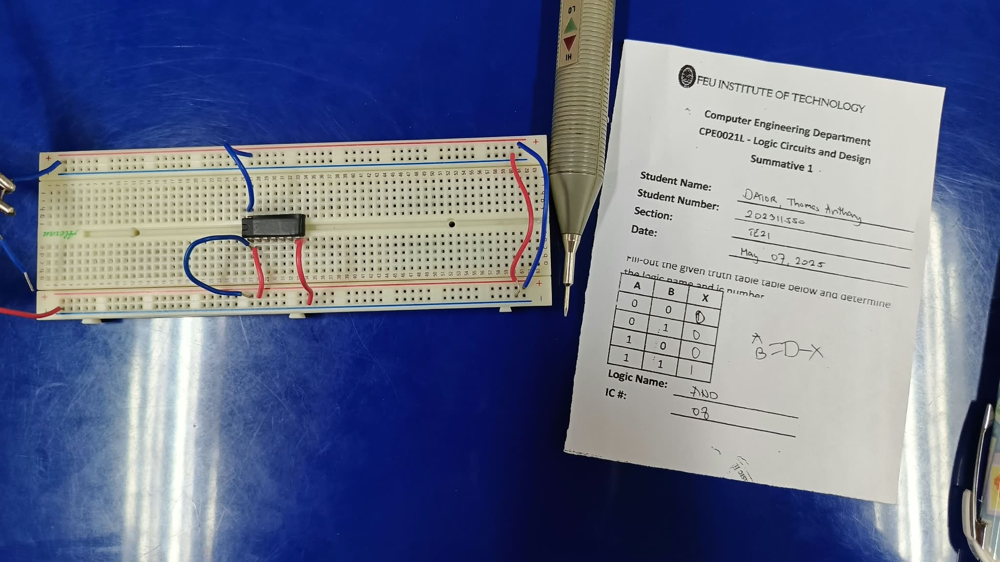
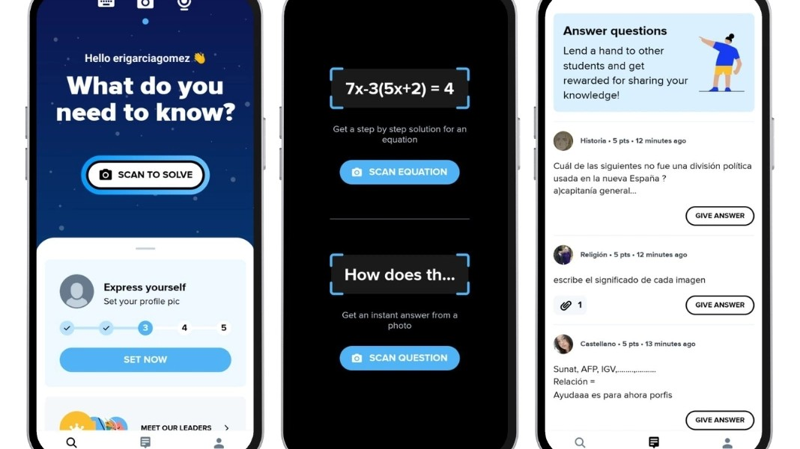
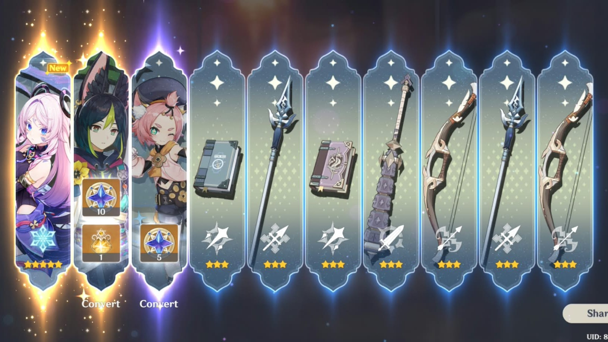
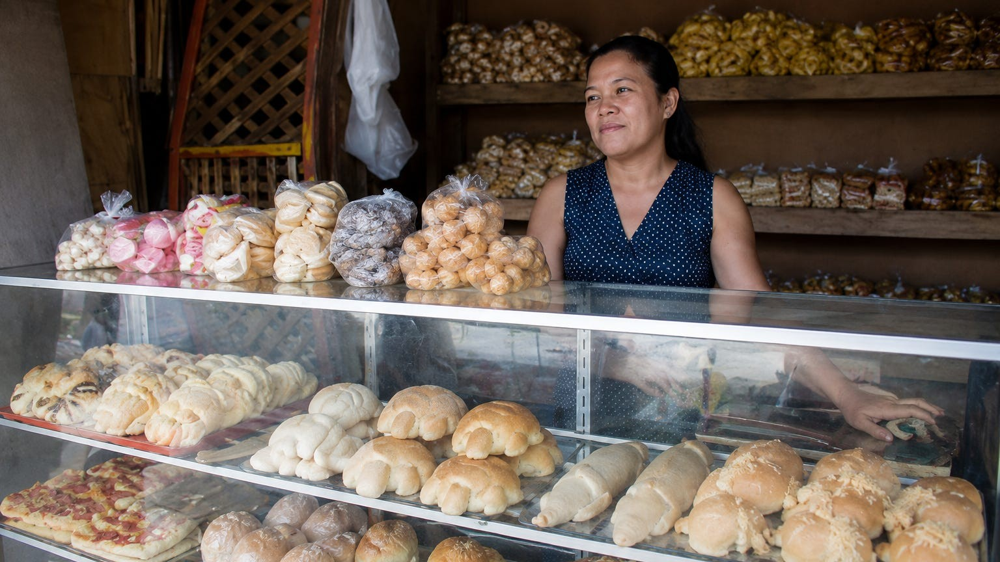
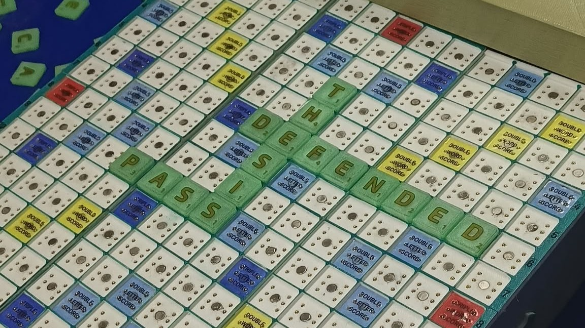
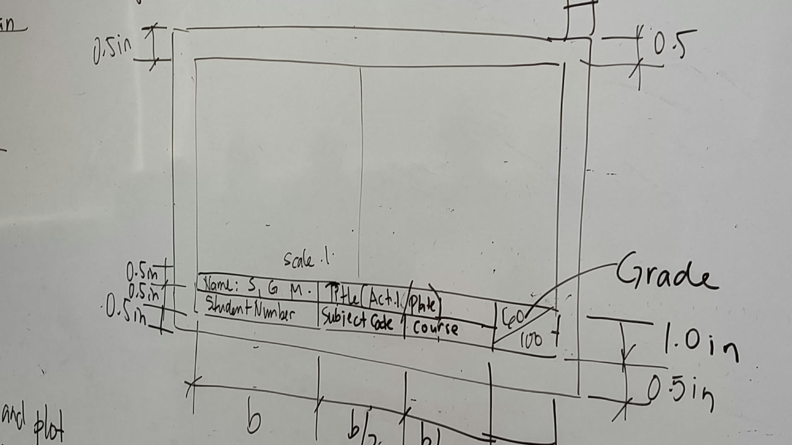
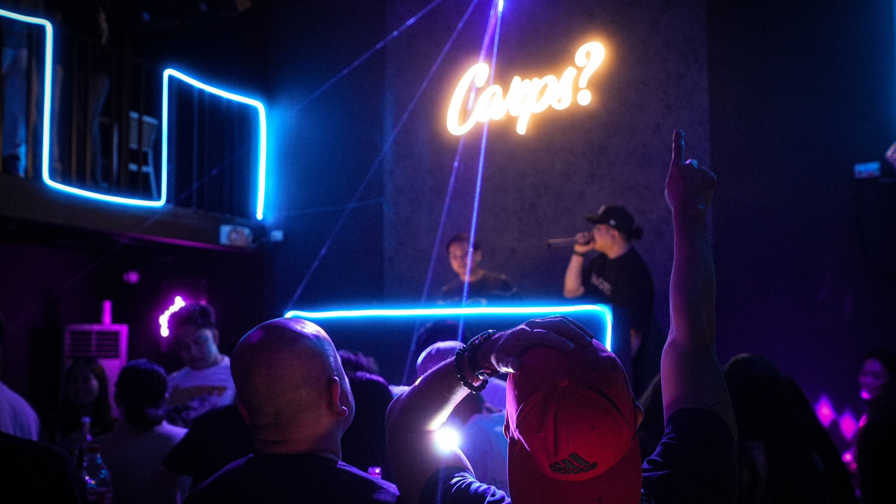
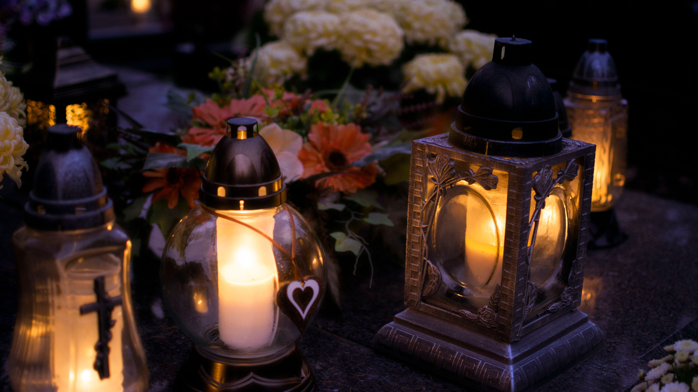
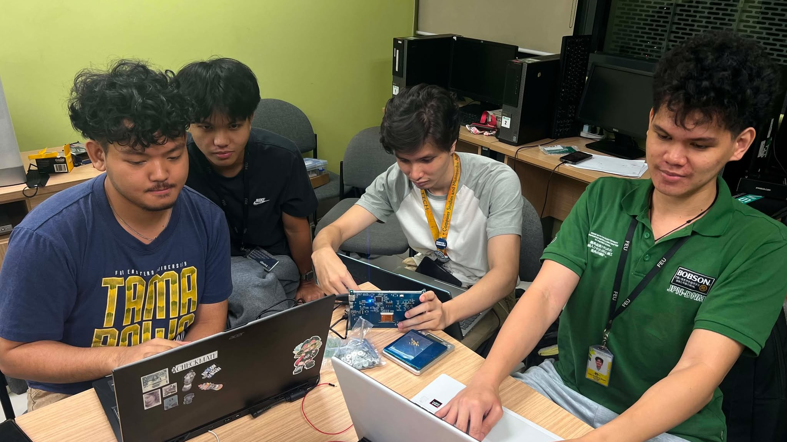

A personal journey through everyday ethical decisions.
This portfolio documents real moments from my life this semester when I had to think
about what the right thing to do was. For each one, I describe what happened, the values
that were in tension, and what the experience taught me about the person I want to be.
The beliefs and values that guide how I try to act.
Personal Ethics Manifesto
I am a person who lives by his own principles. I believe in karma and am easily guilted by my own actions and inactions. I value integrity, responsibility, and fairness, and I try to let these values guide the way I treat others and make decisions. I believe that being successful should never come at the expense of honesty, respect, or the well-being of others. When I make mistakes, and I often do, I want to take responsibility for them, learn from them, and become better rather than simply finding someone or something else to blame. As I continue to grow as a student, leader, and person, I want to remain open to learning from my experiences and questioning my own decisions. Ultimately, I want my actions to reflect not only what I am capable of achieving, but also the kind of person I choose to be.
My Three Core Values
Integrity
Doing what is right even when nobody is watching.
Responsibility
Taking ownership of my choices, actions, and their consequences.
Fairness
Treating people fairly while considering different perspectives and circumstances.
Moral Moments I
Six situations from my own life. Each reflection follows the same structure:
the situation, the ethical conflict, the ethical lens, my decision, and what I learned.
Moral Moment 01
Inspiration for a History Poster
Looking at other people's work for ideas when I didn't feel confident in graphic design.
Moral Moment 02
Helping a Friend Before His Exam
A co-officer from a lower year asked what might come up in his practical exam, and I shared more than I should have.
Moral Moment 03
The Gossip I Didn't Stop
A friend guessed out loud about why someone we know broke up, and I let the conversation continue.
Moral Moment 04
Shortcuts During Online Classes
During the pandemic, I often relied on AI and online forums for answers just to get good grades.
Moral Moment 05
Losing My Temper Over a Game
I said hurtful things about a friend because her luck in a game was better than mine.
Moral Moment 06
The Wrong Price at the Bakery
A cashier told me a lower price than what I owed, and I corrected her.
Moral Moments II
Six more experiences that challenged my values and helped me
understand different perspectives on ethical decision-making.
Moral Moment 07
The Hours We Gave It
Our team's sacrifices, late nights, and shared efforts while completing our thesis project.
Moral Moment 08
The Answers Were Already There
Choosing to rely on my own knowledge despite having access to answers during a certification examination.
Moral Moment 09
The Projector I Forgot
Taking responsibility for an overlooked logistical detail that delayed an organization event.
Moral Moment 10
A Little Kindness After Midnight
A simple gesture and an unexpected conversation with a friend after an organization event.
Moral Moment 11
A Candle for Those I Couldn't Visit
Finding a way to honor my late grandparents during Undas while staying in Manila to finish my thesis.
Moral Moment 12
Giving Credit Where It Belongs
Setting aside personal recognition to acknowledge the teammate who contributed most significantly to our thesis.
The Moral Person I Am Becoming
Ethical Thinking
Looking back at the twelve moral moments in this portfolio, I realized
that understanding right and wrong goes beyond simply knowing what is
acceptable or unacceptable. Before, I often viewed ethical decisions
through the perspective of my personal values and what I believed was
right. However, reflecting on these experiences helped me understand
that morality also involves considering other people, recognizing the
consequences of my actions, and being willing to take responsibility
for my decisions. I learned that even ordinary situations, such as
helping a friend, admitting a mistake, or choosing not to take an
unfair advantage, can reveal a lot about one's character.
Among the different ethical theories I encountered, Aristotle's
Virtue Ethics influenced me the most. Its emphasis on developing good
character through consistent actions made me realize that being a
moral person is not about being perfect or never making mistakes.
My experience as our organization's Director for Logistics, when I
overlooked reserving a projector for an event, reminded me of this.
I made a mistake that inconvenienced other people, but I learned that
acknowledging it and taking responsibility were important steps
toward becoming a better leader. Similarly, choosing not to use the
answers during my certification examination showed me that integrity
is something I must practice even when dishonesty could provide an
easier path. These experiences taught me that the person I become is
shaped not only by major decisions but also by the principles I uphold
in everyday situations.
Values
Throughout these experiences, I have also strengthened my appreciation
for honesty, responsibility, fairness, and compassion. I learned that
fairness does not always mean treating everyone exactly the same, as
demonstrated by our decision to recognize the member who contributed
most significantly to our thesis as its lead proponent. I also realized
that kindness does not have to involve grand gestures. Sometimes,
simply approaching a friend who is alone, buying him something, and
taking the time to listen can already make a difference. My experience
during Undas also reminded me that responsibilities may sometimes
conflict, but I should still make an effort to honor the relationships
and traditions that matter to me. These moments encouraged me to
become more considerate of other people's circumstances instead of
focusing solely on my own perspective.
Ethical Growth
As a Computer Engineering student and a future engineer, I know that
these lessons will extend beyond my personal life. My future profession
will involve making decisions that may affect other people, whether
through the systems I develop, the responsibilities I take on, or the
people I work with. Technical knowledge and competence are important,
but they must be accompanied by honesty, accountability, fairness,
and concern for public welfare. I want to become an engineer who does
not compromise integrity for convenience, who gives credit where it
is deserved, who takes responsibility for mistakes, and who considers
the people affected by every decision. I also understand that ethical
growth is continuous. There will always be situations that challenge
my principles, and I may not always make the best decision immediately.
What matters is my willingness to reflect, learn, and improve.
Ultimately, this portfolio has reminded me that becoming a moral
person is an ongoing journey rather than a destination. I may not
always have the perfect answer to every ethical dilemma, but I can
choose to approach each situation with honesty, empathy, humility,
and responsibility.
My Personal Commitment
As a moral person, I commit myself to... doing what is
right even when it is difficult, treating others with fairness and
compassion, taking responsibility for my actions, and continuously
striving to become someone whose principles are reflected not only
in my words but also in my decisions and actions.
For a history project, we were tasked to make a poster presenting a timeline. Graphic design isn't one of my strengths, so before starting, I looked at other people's work to get ideas for how to lay out and design mine.
The Ethical Conflict
On one side was my need for guidance and my wish to turn in a decent poster despite my weaker design skills. On the other side were originality and respect for the people whose work I was looking at. The question was where learning from someone's design ends and copying it begins, and whether it was fair to submit something shaped by other people's ideas.
Ethical Lens
Principles: Integrity, Honesty, Respect
Integrity asks that the work I submit is genuinely mine. Honesty means not presenting someone else's creative choices as my own. Respect applies to the people whose posters I studied, since their effort and ideas deserve recognition rather than being taken without credit. Looking at examples isn't wrong in itself; it's how many people learn design. It becomes a problem only when inspiration turns into imitation.
Decision / Reflection
I used other people's work as a source of ideas while I made my own poster. I think this was an acceptable choice, because finding inspiration is a normal part of learning, especially in an area where I'm still developing. Looking back, the most ethical approach is to study several examples to understand what makes them work, build my own design from that understanding, and give credit if I ever borrow something distinctive from a specific person.
My Moral Insight
This experience taught me that… looking for inspiration isn't a weakness, but there is a line between learning from others and taking from them, and integrity means staying on the right side of it.

The Situation
During midterm season, a friend who is also a co-officer from a lower year asked me what might come up in the practical exam for his laboratory subjects. I sent him some information and relevant files.
The Ethical Conflict
I wanted to help a friend and fellow officer who was stressed about his exams. But helping him this way conflicted with fairness to his classmates, who didn't get the same information, and with the purpose of the exam itself, which is to measure what each student has actually learned. Being loyal to one person meant putting everyone else at a disadvantage.
Ethical Lens
Principles: Fairness, Justice, Beneficence
Beneficence explains why I wanted to help: I cared about him doing well. Fairness and justice require that everyone taking the same exam competes on equal terms, and specific information about what may come up gave him an advantage his classmates didn't have. Real beneficence would have meant helping him learn the material, not just helping him pass.
Decision / Reflection
I shared the information and files with him. Even at the time, I believed this gave him an unfair advantage. I still could have helped him without sharing too much, for example by explaining concepts he found confusing, reviewing lab procedures with him, or sharing how I prepared for my own practical exams. That would have supported him as a friend while keeping things fair for everyone else.
My Moral Insight
This experience taught me that… being a good friend doesn't mean giving someone every advantage I can. The most helpful thing is often to help them learn, in a way that is still fair to everyone else.
The Situation
During a conversation, a friend mentioned in passing some information about the relationship of someone we both know. She then started theorizing about why they might have broken up, even though neither of us knew what had actually happened. We both knew that sharing gossip like this was wrong, but I didn't stop her.
The Ethical Conflict
I didn't want to make the conversation awkward or seem preachy to my friend. At the same time, the person we were talking about deserved to have their privacy respected, and they weren't there to explain or defend themselves. Guessing about someone's breakup can easily turn into a rumor that people start to believe.
Ethical Lens
Principles: Privacy, Respect, Non-maleficence
A breakup is a personal matter, and privacy means the people involved get to decide who knows about it and what is said. Respect means not treating someone's private life as entertainment behind their back. Non-maleficence, the duty not to cause harm, applies because speculation can spread and hurt someone's reputation and feelings, even if we never meant it to.
Decision / Reflection
I didn't stop her and let the conversation go on. By staying silent, I became part of it. The most ethical response would have been to gently redirect the conversation, for example by saying that we don't really know what happened and that it isn't our business, and then changing the topic. It wouldn't have needed to be confrontational to make a difference.
My Moral Insight
This experience taught me that… staying silent is also a choice, and protecting someone's privacy can take as little as one honest sentence.

The Situation
During the pandemic, I frequently used AI and question-and-answer websites and forums to find possible answers for my schoolwork. I personally disliked online classes, and at the time, all I wanted was good grades.
The Ethical Conflict
I wanted good grades and a way to get through a period of school I found frustrating. That conflicted with honesty about whose work I was submitting and with my responsibility for my own learning. Grades are supposed to show what I understand, and relying on outside answers made them say something that wasn't fully true. It was also unfair to classmates who were doing the work themselves.
Ethical Lens
Principles: Honesty, Integrity, Responsibility
Honesty means the work I submit should reflect my own effort and understanding. Integrity means doing the right thing even when no one is checking, and online classes made it easy to go unchecked. Responsibility means owning my education, including the gaps in knowledge that shortcuts left behind.
Decision / Reflection
I relied on these tools often, mostly to get answers rather than to understand the lessons. I understand why I did it, since online classes were genuinely hard for me, but that reason doesn't make it right. The more ethical approach would have been to use AI and the internet as learning aids, such as asking them to explain a concept or checking my answers after trying on my own, while following my teachers' rules, and to ask for help when I was struggling instead of looking for shortcuts.
My Moral Insight
This experience taught me that… a grade is only worth something if it honestly reflects what I learned, and difficult circumstances are a reason to ask for help, not to cut corners.

The Situation
I once said negative things about a friend because my luck was worse than hers in a video game we played together. This led to her unfriending me, and rightfully so.
The Ethical Conflict
In the moment, my frustration and competitiveness took over. That conflicted with the respect and kindness I owe a friend. Her good luck wasn't something she controlled, and it had nothing to do with my bad luck, yet I made her the target of my feelings.
Respect means treating others with dignity, even when I'm upset. Non-maleficence applies because my words hurt her and damaged our friendship. Responsibility means recognizing that the real problem was my reaction, not her, and accepting the consequences that followed.
Decision / Reflection
I let my frustration speak for me and said things I shouldn't have, and it cost me the friendship. Looking back, my judgment was clouded and I could have handled the situation better. The most ethical response would have been to step away from the game when I noticed I was getting frustrated, remind myself that her luck wasn't her fault, and, once I had said something hurtful, offer a sincere apology without making excuses.
My Moral Insight
This experience taught me that… my emotions are my responsibility, and something as small as a game can damage a real relationship if I let frustration take control.

The Situation
After a gym session, I went to a bakery to buy some bread and calculated exactly what I had to pay. The cashier, however, told me a lower price. I corrected her and gave her the right amount.
The Ethical Conflict
Keeping quiet would have been easy, and I would have saved some money without anyone noticing. On the other hand, paying less than the real price wouldn't have been fair to the bakery, and if the register came up short, the cashier could have been the one held responsible for the mistake.
Ethical Lens
Principles: Honesty, Fairness, Integrity
Honesty means telling the truth even when a lie or silence would benefit me. Fairness means paying what I actually owe for what I received. Integrity, one of my core values, is about doing what is right even when nobody is watching, and this was exactly that kind of moment.
Decision / Reflection
I corrected the cashier and paid the right amount. I believe this was the right decision. The amount was small, but small moments like this are where honest habits are built, and it also protected someone who had simply made a mistake.
My Moral Insight
This experience taught me that… integrity shows most in small moments when no one would notice, and being honest is easier when it's already a habit.

The Situation
During the development of our thesis project, ScrabBit, our team of four had to dedicate countless hours to completing the system. Our project involved building an automated Scrabble board that could detect tiles, validate words, and calculate scores in real time. For several weeks, we frequently worked late at one of our member's condo, sometimes staying until three in the morning. There were nights when we became frustrated, exhausted, and even went without dinner because we were focused on finishing the project. Since I lived far from the place, staying that late also meant spending more time away from home. Despite these difficulties, all four of us continued working together and went home at the same time.
The Ethical Conflict
Our situation presented a conflict between the personal sacrifices we had to make and the benefits we hoped to achieve as a team. Continuing to work meant dealing with exhaustion, frustration, and less time for our personal responsibilities. However, stopping or reducing our efforts could have affected our progress and our chances of completing and successfully defending the project. I had to consider whether the sacrifices we were making were justified by the outcome we wanted to achieve, not only for myself but also for my teammates.
Utilitarianism judges an action based on its consequences and whether it produces the greatest overall well-being for everyone affected. In our situation, our continued effort helped the entire team move closer to completing the thesis and achieving a successful defense. However, the theory also requires considering the negative consequences of our actions, including exhaustion, missed meals, and personal sacrifices. It is not simply about achieving a successful result; the well-being of everyone involved must also be considered.
Decision / Reflection
We decided to continue working together and do our best to complete the project. Each member contributed to solving problems, improving the system, and meeting our deadlines. Looking back, I believe our cooperation benefited all four of us because we shared both the responsibilities and the eventual success of the project. Although the experience was difficult, I also realized that we should have been more mindful of our health and personal needs instead of treating exhaustion as something we simply had to accept.
My Moral Insight
This experience taught me that… working for the benefit of a group requires considering everyone's well-being, not just the final outcome. Shared success becomes more meaningful when the people working toward it are also treated with care and consideration.

The Situation
During one of my certification examinations, our instructor provided a Google Drive link containing the answers to the exam. We were allowed to access the link while taking the examination, which meant that I had an opportunity to use the answers and potentially obtain a perfect score. However, I decided to prepare for the examination by studying the material instead. When the exam began, I relied on what I had learned and answered the questions using my own knowledge rather than consulting the provided answers.
The Ethical Conflict
I was faced with a choice between taking the easier opportunity to achieve a high score and following my own principles of honesty and integrity. Using the answers could have given me an advantage and made the examination easier, but the result would not necessarily reflect what I actually understood. On the other hand, answering independently meant accepting the possibility of making mistakes or receiving a lower score. The challenge was deciding whether I valued the result more than the honesty behind how I achieved it.
Ethical Lens
Principles: Moral Duty, Integrity, Universalizability, Respect for Persons
Deontology, particularly Immanuel Kant's moral philosophy, emphasizes acting according to principles and duties rather than judging an action only by its consequences. Kant's idea of the categorical imperative asks whether the principle behind an action could reasonably be followed by everyone. If students relied on answers instead of demonstrating their own understanding, examinations would lose much of their purpose as a measure of learning. It also emphasizes treating people as ends in themselves, which includes respecting the value of genuine learning rather than treating a certification as merely something to obtain.
Decision / Reflection
I chose to answer the examination using my own knowledge and did not use the answers from the Google Drive link. I accepted that I might not receive a perfect score, but I wanted the result to reflect what I had actually studied and understood. Fortunately, I passed the examination without relying on external answers. More importantly, I felt that the result was something I could genuinely be proud of because I earned it through my own preparation.
My Moral Insight
This experience taught me that… integrity matters most when an easier alternative is available. A good result has greater meaning when I know that I achieved it honestly and through my own effort.
The Situation
As the Director for Logistics of our organization, one of my responsibilities was to make sure that the venue and equipment needed for an event were prepared. I had booked the venue weeks in advance, but I overlooked one important detail: reserving a projector. On the day of the event, we realized that we did not have one available. This caused a delay as we had to look for a department that could lend us a projector. Fortunately, one department was able to provide one despite their own time constraints, allowing the event to proceed.
The Ethical Conflict
I had to face the consequences of my own oversight and decide how to respond to the inconvenience it caused. I could have focused on making excuses or simply moving on once the problem was resolved. However, I knew that my responsibility as an officer did not end with booking the venue. Other people depended on me to prepare the necessary resources, and my mistake affected their time and the event's schedule. I needed to acknowledge what happened instead of avoiding responsibility.
Aristotle's Virtue Ethics focuses on developing good character through consistent actions and habits. Rather than concentrating only on whether a particular action follows a rule, it asks what a virtuous person would do in a given situation. In this experience, accountability and humility were important because I needed to recognize my mistake and accept responsibility for it. Practical wisdom, or phronesis, also involves learning how to make better decisions in real situations, such as becoming more thorough when planning future events.
Decision / Reflection
After the activity, I apologized to everyone during our short post-event meeting. I also messaged our organization president privately afterward to explain what happened and apologize again. Although the projector was eventually provided and the event continued, I recognized that the delay could have been avoided if I had checked the equipment requirements more carefully. Moving forward, I knew I needed to improve my preparation process by reviewing every requirement instead of assuming that booking the venue was enough.
My Moral Insight
This experience taught me that… being a responsible leader does not mean never making mistakes. It means having the humility to acknowledge them, accepting their consequences, and developing better habits so that I can do better next time.

The Situation
After one of our organization events, some of us went to a nearby café and bar for an afterparty. At one point, I stepped outside and noticed that one of my friends was sitting alone. I decided to go to a nearby convenience store, buy some ice cream, and spend some time talking with him. What started as a simple conversation eventually covered different aspects of our lives, including scholarships, running, love life, and other personal experiences. It was an ordinary moment, but it became a meaningful conversation that I still remember.
The Ethical Conflict
There was no major dilemma or difficult decision involved, but I still had a choice about how I would respond to the situation. I could have simply returned to the others and continued enjoying the afterparty, or I could take a little time to approach my friend and spend time with him. The latter required very little effort, but it meant being willing to give someone my attention instead of focusing only on what I wanted to do.
Ethical Lens
Principles: Love of Neighbor, Compassion, Kindness, Human Dignity
Christian Ethics emphasizes loving others, showing compassion, and recognizing the dignity of every person. The teaching to love one's neighbor encourages us to care for others through our words and actions, even in ordinary circumstances. In this situation, kindness did not require a grand gesture or a solution to someone's problems. It could simply mean noticing another person, approaching them, sharing something, and being willing to listen without expecting anything in return.
Decision / Reflection
I chose to spend time with my friend and share a simple treat with him. We talked about different topics, exchanged stories, and enjoyed the conversation. I did not approach him with a particular goal or expectation; I simply wanted to spend time with him. Looking back, I realized that small acts of kindness can create opportunities for genuine connection. Sometimes, being present and making time for someone is already a meaningful way of showing care.
My Moral Insight
This experience taught me that… kindness does not always have to be something extraordinary. A small gesture, a shared conversation, or simply giving someone your time can express care and make ordinary moments more meaningful.

The Situation
Every year during Undas, my family has a tradition of visiting our province to remember and pay respects to our departed loved ones, including my late grandparents. However, on November 4, our thesis presentation was scheduled, while the final paper submission deadline was November 3. Because of the amount of work I still needed to complete, I could not join my family for the annual trip. I asked for their understanding, and they agreed because they knew how important it was for me to finish my academic responsibilities. I stayed alone in Manila, but I still wanted to take part in the tradition in my own way. As the one left behind, I lit a candle to honor and remember my grandparents.
The Ethical Conflict
I found myself balancing two responsibilities that were both important to me. On one hand, I wanted to be with my family and participate in a tradition that allowed us to remember our loved ones together. On the other hand, I had academic responsibilities that required my attention, especially with our thesis deadlines approaching. I had to accept that I could not fulfill both commitments in the same way that year. The challenge was finding a way to remain respectful of my family and our tradition while also fulfilling the responsibility I had already taken on.
Ethical Lens
Principles: Respect, Family Responsibility, Remembrance, Self-Discipline
Eastern virtue traditions offer perspectives on character, relationships, respect, and one's responsibilities within a family and community. In Confucian thought, for example, the importance of family relationships and respect for elders is reflected in the value of filial responsibility. These ideas encourage people to cultivate respect and consideration through their actions. In my situation, honoring my grandparents and remembering our family tradition remained important even though I could not physically join my relatives. At the same time, fulfilling my academic responsibility required discipline and commitment. This experience reminded me that respect for family and responsibility toward my commitments can both be expressed through thoughtful actions.
Decision / Reflection
I decided to stay in Manila and focus on completing our thesis requirements. I communicated with my family, explained my situation, and asked for their understanding. Although I could not visit my grandparents' resting place with them, I lit a candle as a personal way of remembering and honoring them. It was a simple gesture, but it allowed me to acknowledge the tradition and the people it represents. I realized that being unable to participate physically did not mean I had to forget the meaning behind it.
My Moral Insight
This experience taught me that… honoring the people and traditions that matter to me does not always depend on being physically present. Respect can also be shown through remembrance, intention, and the effort to remain connected to my family while fulfilling my responsibilities.

The Situation
After successfully defending our thesis, ScrabBit, our group needed to decide who would be listed as the lead proponent or primary author for the journal paper. The other members would be listed as co-authors. Although the original concept of ScrabBit came from me, one of my teammates had contributed more significantly to the development of the project and had become its main driving force. When the four of us discussed who should take the lead, we collectively agreed that this teammate deserved the position. For us, the decision was straightforward because we recognized the amount of work and intellectual contribution that person had given to the project.
The Ethical Conflict
I had to consider my personal connection to the project because I was the one who originally came up with the idea. It would have been easy to associate being the original proponent with deserving the highest recognition. However, I also knew that creating the initial concept was only one part of the entire research and development process. The other member had contributed more to turning that idea into a working system. I had to decide whether I would prioritize personal recognition or acknowledge the actual contributions made throughout the project.
Ethical Lens
Principles: Fairness, Proportionality, Recognition of Merit, Equity
Distributive Justice concerns how benefits, responsibilities, and recognition should be fairly allocated among people. Fairness does not always mean giving everyone exactly the same thing; it can mean recognizing relevant differences in their contributions and circumstances. In academic work, authorship recognition should reflect the actual intellectual and practical contributions of each member, following the applicable publication guidelines. In our situation, recognizing the teammate who contributed most significantly as the lead proponent was a way of acknowledging the effort and responsibility that person carried throughout the project.
Decision / Reflection
I agreed with the group's decision to make my teammate the lead proponent. Although I had originally proposed the idea of ScrabBit, I understood that the project became what it was through the collective efforts of all four members, and that this particular teammate had contributed the most significantly to its development. I did not want my personal attachment to the original idea to outweigh what I believed was a fair recognition of everyone's contributions. Being the person who first imagined the project did not automatically mean I had to receive the highest level of recognition. Our decision did not erase my contribution; it simply acknowledged that different contributions deserve recognition in different ways.
My Moral Insight
This experience taught me that… fairness sometimes requires setting aside personal pride and recognizing what others genuinely deserve. Being acknowledged for an original idea is meaningful, but giving proper credit to the people who help bring that idea to life is just as important.